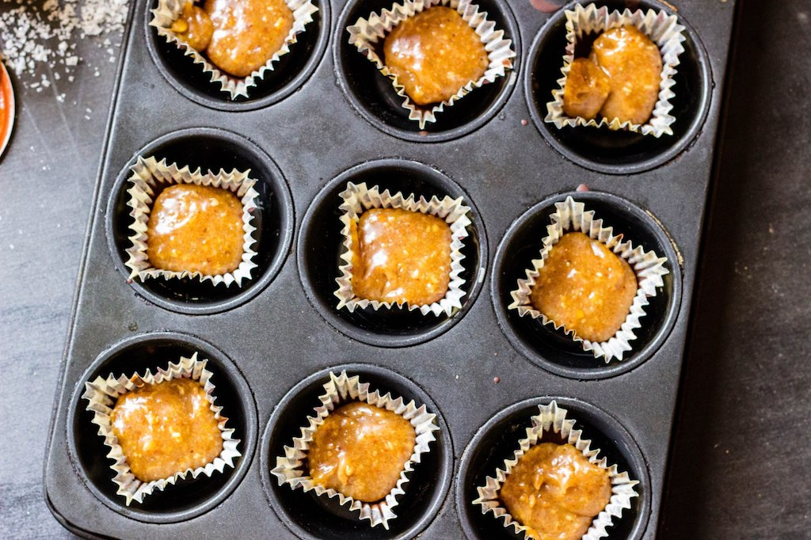

about frankie's feast
I'm Anna 'Frankie' Franklyn and I'm crazy obsessed with food, travel, sustainability and indoor plants. Frankie's Feast began way back in 2013 as a place to keep all my recipes, but since scoring my dream job at The Urban List Perth, I've had less time to test, perfect and photograph recipes, and I've been travelling a lot more, so I thought it was time to dust off the website and revamp it with a travel section.

Frankie's Feast is now dedicated to vegetarian recipes and travels. Full disclosure: I don't necessarily call myself a vegetarian. I eat seafood and I sometimes eat meat for work, because it's tough to write about the best places to eat in Perth without tasting the food!

I tend to avoid meat because I think we eat wayyyy too much of it and it wreaks havoc on the environment (did you know meat and dairy account for 18% of calories but 83% of farmland and 60% of acgriculture's greenhouse gas emissions?!) I also just love vegetables and plant based foods, so giving up meat seemed like a no brainer to me. Can you blame me when vegan caramel looks this good?!
wanna chat?
If you've got questions or want to work with me, email me or fill out the form below and I'll get back to you quick smart!
{% include form.html %}